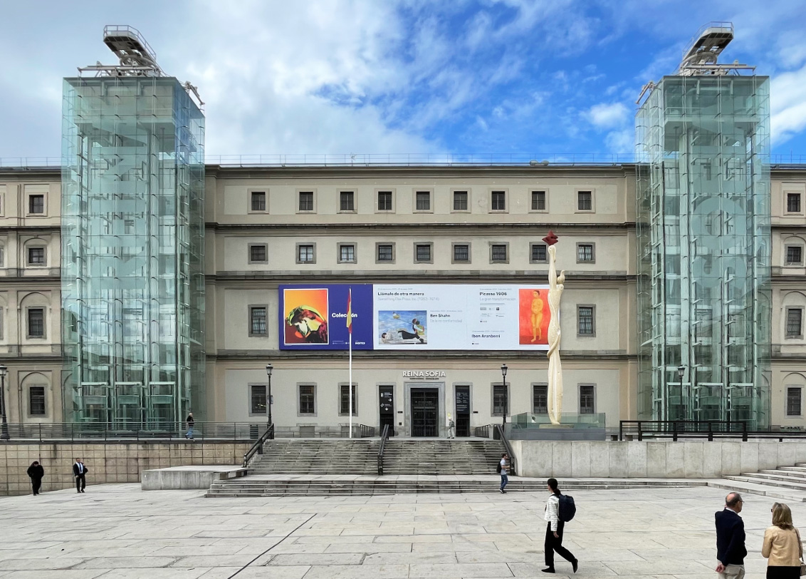
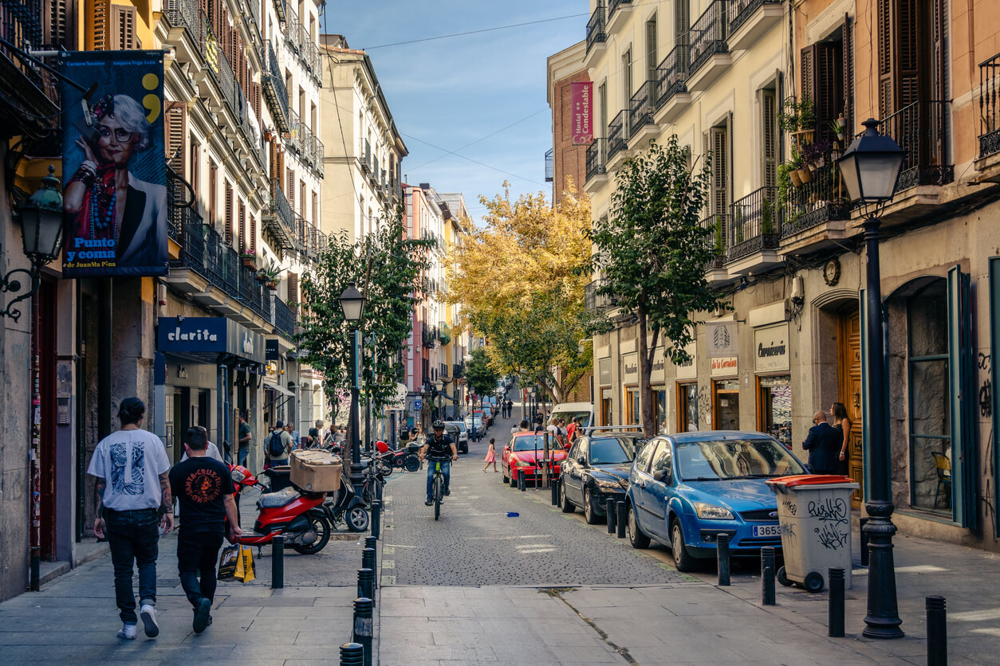
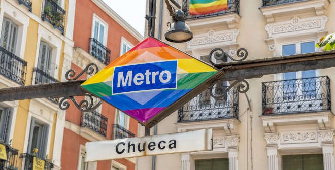
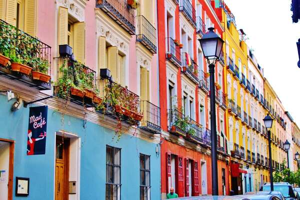

Ocio y Cultura en Madrid
Museos Gratuitos y Descuentos para Estudiantes
Museo del Prado
Uno de los museos más importantes del mundo, con obras de Goya, Velázquez y El Greco.
- Entrada gratuita: De lunes a sábado de 18:00 a 20:00, y domingos de 17:00 a 19:00.
- Descuento estudiantes: 50% de descuento con carné de estudiante.

Museo Reina Sofía
Famoso por albergar el "Guernica" de Picasso y otras obras de arte moderno.
- Entrada gratuita: Lunes, miércoles a sábado de 19:00 a 21:00, y domingos de 13:30 a 19:00.
- Descuento estudiantes: Entrada reducida para estudiantes menores de 25 años.
Eventos Culturales y Festivales Importantes
Festival de Otoño
Uno de los festivales de teatro más importantes de Europa, con obras nacionales e internacionales.
- Fechas: Octubre a diciembre.
- Descuento estudiantes: Entradas a precios reducidos.
Madrid Orgullo
El festival LGTBI+ más grande de Europa, con conciertos, desfiles y actividades culturales.
- Fechas: Finales de junio a principios de julio.
- Eventos gratuitos: Conciertos y actividades al aire libre.
Vida Nocturna y Zonas de Bares Recomendadas

Malasaña
El barrio más emblemático de la movida madrileña, lleno de bares, pubs y discotecas.
- Recomendaciones: Bar La Vía Láctea, Café La Palma.
- Ambiente: Alternativo y juvenil.

Chueca
Conocido por su ambiente LGTBI+ y su vibrante vida nocturna.
- Recomendaciones: Bar Why Not?, Club MalaMala.
- Ambiente: Moderno y diverso.

La Latina
Famoso por sus terrazas y bares de tapas, ideal para empezar la noche.
- Recomendaciones: El Rastro (mercado dominical), Taberna El Alamillo.
- Ambiente: Tradicional y animado.